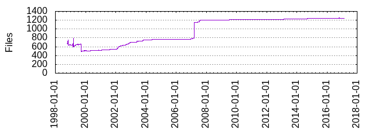

Files
- Total files
- 1241
- Total lines
- 459196
- Average file size
- 11726.04 bytes

| Extension | Files (%) | Lines (%) | Lines/file |
|---|
| 198 (15.95%) | 43947 (9.57%) | 221 |
| 0 | 1 (0.08%) | 56 (0.01%) | 56 |
| 1 | 11 (0.89%) | 3032 (0.66%) | 275 |
| 2 | 2 (0.16%) | 2068 (0.45%) | 1034 |
| 20020917 | 1 (0.08%) | 195 (0.04%) | 195 |
| 4 | 2 (0.16%) | 15211 (3.31%) | 7605 |
| 6 | 2 (0.16%) | 36887 (8.03%) | 18443 |
| Debian | 1 (0.08%) | 9 (0.00%) | 9 |
| ac | 1 (0.08%) | 1937 (0.42%) | 1937 |
| am | 70 (5.64%) | 2019 (0.44%) | 28 |
| c | 210 (16.92%) | 196658 (42.83%) | 936 |
| cat | 1 (0.08%) | 113 (0.02%) | 113 |
| css | 1 (0.08%) | 91 (0.02%) | 91 |
| dat | 1 (0.08%) | 326 (0.07%) | 326 |
| dtd | 5 (0.40%) | 818 (0.18%) | 163 |
| ent | 20 (1.61%) | 1813 (0.39%) | 90 |
| fpl | 2 (0.16%) | 356 (0.08%) | 178 |
| fss | 1 (0.08%) | 2006 (0.44%) | 2006 |
| fvwm | 1 (0.08%) | 461 (0.10%) | 461 |
| fvwm2rc | 2 (0.16%) | 4049 (0.88%) | 2024 |
| fvwmrc | 1 (0.08%) | 400 (0.09%) | 400 |
| gmo | 14 (1.13%) | 255 (0.06%) | 18 |
| h | 179 (14.42%) | 18917 (4.12%) | 105 |
| html | 5 (0.40%) | 874 (0.19%) | 174 |
| in | 59 (4.75%) | 23922 (5.21%) | 405 |
| l | 1 (0.08%) | 188 (0.04%) | 188 |
| m4 | 1 (0.08%) | 1692 (0.37%) | 1692 |
| menu | 1 (0.08%) | 6 (0.00%) | 6 |
| menus | 1 (0.08%) | 8 (0.00%) | 8 |
| mms | 1 (0.08%) | 990 (0.22%) | 990 |
| mod | 6 (0.48%) | 11665 (2.54%) | 1944 |
| notes | 1 (0.08%) | 62 (0.01%) | 62 |
| opt | 1 (0.08%) | 3 (0.00%) | 3 |
| pl | 13 (1.05%) | 2248 (0.49%) | 172 |
| pm | 18 (1.45%) | 6991 (1.52%) | 388 |
| png | 44 (3.55%) | 4838 (1.05%) | 109 |
| po | 16 (1.29%) | 5490 (1.20%) | 343 |
| pod | 1 (0.08%) | 476 (0.10%) | 476 |
| pot | 2 (0.16%) | 891 (0.19%) | 445 |
| ppp | 1 (0.08%) | 40 (0.01%) | 40 |
| purify | 1 (0.08%) | 9 (0.00%) | 9 |
| read | 2 (0.16%) | 584 (0.13%) | 292 |
| sample | 2 (0.16%) | 41 (0.01%) | 20 |
| sed | 1 (0.08%) | 11 (0.00%) | 11 |
| sh | 8 (0.64%) | 787 (0.17%) | 98 |
| sin | 1 (0.08%) | 19 (0.00%) | 19 |
| style | 1 (0.08%) | 41 (0.01%) | 41 |
| txt | 2 (0.16%) | 351 (0.08%) | 175 |
| vim | 1 (0.08%) | 80 (0.02%) | 80 |
| xbm | 3 (0.24%) | 734 (0.16%) | 244 |
| xml | 234 (18.86%) | 21083 (4.59%) | 90 |
| xpm | 8 (0.64%) | 509 (0.11%) | 63 |
| xsl | 76 (6.12%) | 47260 (10.29%) | 621 |
| y | 1 (0.08%) | 864 (0.19%) | 864 |
| zsh | 1 (0.08%) | 23 (0.01%) | 23 |